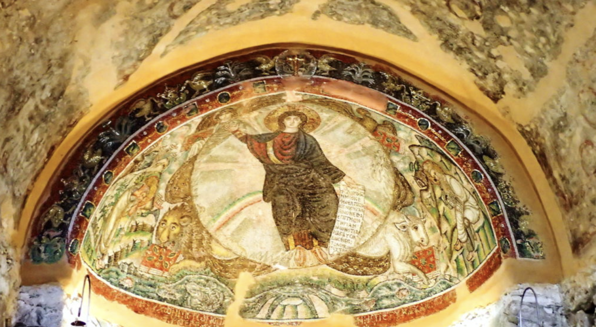

An Urban Neighborhood Tour: Ano Poli
Ano Poli, the Upper Town of Thessaloniki, is a living testament to the city's rich history, with its roots extending back over 2300 years. This enchanting neighborhood is a captivating blend of stone-paved alleys, traditional houses, and awe-inspiring Byzantine-era monuments. As I embarked on my journey through Ano Poli, I had the privilege of speaking with local residents and exploring its ancient relics, offering a glimpse into Thessaloniki's great civilization. So my friend, please come with me! Let us go on to this adventure in Ano Poli!

Beginning our journey from the city center, walking along Agias Sofias Street, make a left turn at the intersection of Eptapirgio and Akropoleos Streets to the south of Thessaloniki's northern wall and the great Gates Portares, we reach the Moni Vlatadon Monastery.
This serene oasis is perched on the hill, offering a place for quiet reflection amid the bustling city below. Its Byzantine architecture, with intricate frescoes adorning its walls, is a testament to the spiritual heritage of the region. Maria, a caretaker at Moni Vlatadon, spoke of the monastery's significance: "This place holds the echoes of prayers from centuries past. It's a sanctuary of peace and spirituality, where many visitors – like yourself, come to connect with the city's ancient soul."
Now, come upstairs! An excellent view of Thessaloniki and Thermaikos Bay opens out from the monastery's surrounding area's observation deck is waiting. Is today one of those lovely sunny days? Then spot up! There, you can see all the way to where the Greek gods live – the peaks of Mount Olympus.
The monastery is not vast but well-kept and lovely, with shady corners and beautiful flowers. Even cages containing peacocks that allow feeding with bread fascinate many children. Before you turn around and get ready to look for the next treasure in the old town, place a visit to the bookshop by the right side of the gate or stop by the cute local Greek restaurant, 'Ticho Ticho,' for a quick refresher! When you are ready, walk along the sidewalk downhill.
As I continued my descent through Ano Poli, each step took me deeper into the heart of Thessaloniki's history. The cobbled streets, weathered by centuries of footsteps, echoed with the whispers of bygone eras. At a corner turn, I stood before the Church of Osios David, an exquisite treasure hidden in the tranquil neighborhood.
The church's unassuming façade belied the splendor within. Stepping through its ancient wooden doors, I was enveloped in a world of Byzantine artistry and spiritual devotion. Taking a quick look around, maybe you will be like me, immediately drawn to the mesmerizing Byzantine mosaics adorned the walls and dome. Each mosaic told a story, vividly depicting scenes from the life of Christ. Though centuries old, the colors remained vibrant, as if frozen in time. Gold leaf glimmered in the soft light, adding an ethereal quality to the sacred space.
One particular mosaic depicted the Baptism of Christ, the vibrant blues and rich reds creating a striking contrast against the gold background. The serene expressions on the faces of Christ and John the Baptist seemed to transcend time, inviting visitors to contemplate the profound significance of the moment.
Yannis, a local artisan who had made Ano Poli his home for generations, shared his connection to the Church of Osios David. As we stood in the hallowed space, he spoke with a reverence that mirrored the church's atmosphere. "I find inspiration in these ancient mosaics," he said, his voice filled with a quiet passion. "They remind me that art and spirituality have always been intertwined in our culture. Our ancestors poured their hearts and souls into creating these masterpieces, and it's a privilege to be surrounded by their legacy."
Yannis explained that the Church of Osios David was not merely a place of worship but a living testament to the enduring spirit of Thessaloniki. The church had withstood the test of time, surviving earthquakes, wars, and the passage of centuries. Its existence was a testament to the unwavering faith and determination of the city's inhabitants.
As I listened to Yannis's words, I couldn't help but feel a profound sense of awe. I was not just a visitor passing through; I was a witness to the living history of Ano Poli. The mosaics, the aged stone walls, and the stories shared by locals were threads that wove together the tapestry of this remarkable neighborhood. It is not just the buildings but the people, the narratives, and the memories behind them that make Ano Poli more than alive.
My emotions welled within me, a mixture of admiration and gratitude. Ano Poli made me feel connected to something greater than myself, to a lineage of people who had loved, prayed and persevered in the face of adversity. It was a reminder that history was not confined to dusty books but lived and breathed in the very stones and souls of the city.
As I left the Church of Osios David, I carried with me a deeper appreciation for the interplay of art and spirituality, a profound respect for the resilience of Thessaloniki's people, and an overwhelming sense of privilege for having walked in the footsteps of history. Ano Poli was not just a place; it was an experience that left an indelible mark on my heart, and it was a privilege to call it home, if only for a while.
So now, take a moment to savor the tranquility of the surrounding cobblestone streets and the warm embrace of Ano Poli's timeless charm. The journey may be coming to an end, but the memories and insights gained will stay with you forever.
Now, let me recommend a few dining places and shops where you can further immerse yourself in the culture of Ano Poli:
- Cucina Povera: Family-run taverna hidden gem, offering traditional Greek cuisine with a modern twist. Try their moussaka or bouyiourdi and homemade Keftedes while enjoying the cozy atmosphere.
- TILT! Gifts: Explore this quaint shop for unique handmade souvenirs, including pottery, textiles, and jewelry, all crafted by local artisans.
- Petit Four: The best bakery in Ano Poli is located near the Church of Osios David. The staff was more than friendly and excited when hearing that I was a student writing a walking tour of the city and offered me many insights into the surrounding neighborhood!
As you enjoy the delectable cuisine and explore the charming shops, remember that Ano Poli is not just a place; it's an experience that continues to unfold with every step you take. May your time in Ano Poli be filled with wonder, appreciation for history, and a deep connection to the spirit of Thessaloniki.
As you bid farewell to this enchanting neighborhood, carry with you the memories of Byzantine mosaics, the stories of its residents, and the knowledge that you have walked in the footsteps of history. I knew that Ano Poli had left an indelible mark on my soul. I hope it has done the same for you, and I hope you treasure the moments you've spent exploring this timeless gem of Thessaloniki!
Bibliography:
Archibald, Zosia, Catherine Morgan, David M. Smith, Helen Murphy-Smith, Robert Pitt, Chryssanthi Papadopoulou, Fabienne Marchand, Matthew Haysom, Alexandra Livarda, and Daniel Stewart. “ARCHAEOLOGY IN GREECE 2013-2014.” Archaeological Reports, no. 60 (2013): 1–135. http://www.jstor.org/stable/43187051.
Bonnekoh, Pamela. “The Figurative Wall Paintings in Thessaloniki from the End of the 4TH to the 7TH Century AD.” In Antike Malerei Zwischen Lokalstil Und Zeitstil: Akten Des XI. Internationalen Kolloquiums Der AIPMA, 13.-17. September 2010, edited by Norbert Zimmermann, 1st ed., 711–16. Austrian Academy of Sciences Press, 2014. http://www.jstor.org/stable/j.ctt1zctswr.96.
NELSON, ROBERT S. “A Miniature Mosaic Icon of St. Demetrios in Byzantium and the Renaissance.” Dumbarton Oaks Papers 75 (2021): 41–84. https://www.jstor.org/stable/27107151.
Sharon E. J. Gerstel, Chris Kyriakakis, Konstantinos T. Raptis, Spyridon Antonopoulos, and James Donahue. “Soundscapes of Byzantium: The Acheiropoietos Basilica and the Cathedral of Hagia Sophia in Thessaloniki.” Hesperia: The Journal of the American School of Classical Studies at Athens 87, no. 1 (2018): 177–213. https://doi.org/10.2972/hesperia.87.1.0177.
Vakalopoulos, Apostolos E. A history of thessaloniki. Thessaloniki: Institute for Balkan Studies, 1993.
Vickers, Michael. “A Note on the Byzantine Palace at Thessaloniki.” The Annual of the British School at Athens 66 (1971): 369–71. https://www.jstor.org/stable/30103243